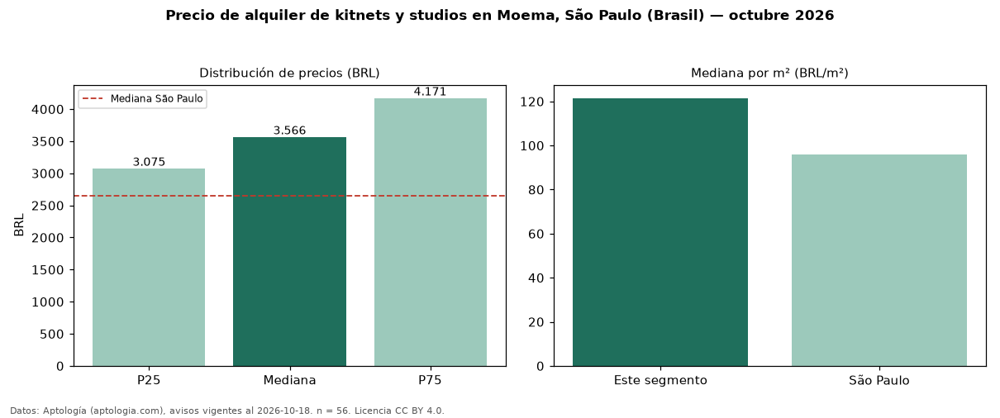

Precio de alquiler de kitnets y studios en Moema, São Paulo (Brasil) — octubre 2026
BRL 3.566 al mes es el canon mediano de kitnets y studios en alquiler en Moema, São Paulo (Brasil) (n = 56 avisos). Frente a la mediana de São Paulo para kitnets y studios (BRL 2.650), queda 35 % por encima. Por metro cuadrado, la mediana es BRL 121/m² al mes (n = 56 avisos con área), 27 % por encima de São Paulo (BRL 95,83/m²). Por precio mediano es el puesto 2 de 21 bairros de São Paulo con al menos 30 avisos de kitnets y studios en alquiler (BRL): entre las más caras. El área mediana anunciada es 29 m². La cuota de mantenimiento o condominio mediana declarada es BRL 688 al mes (n = 56), aparte del canon. La mitad central de los avisos va de BRL 3.075 a BRL 4.171 (razón 1,4), una dispersión baja. Datos: Aptología (aptologia.com), CC BY 4.0 — https://www.aptologia.com/br/aluguel/sao-paulo/moema. Archivos: PDF, CSV con las cifras y gráfica PNG.

| Avisos únicos | 56 |
|---|---|
| Percentil 25 | COP 3.075 |
| Mediana | COP 3.565 |
| Percentil 75 | COP 4.171 |
| Mediana por m² | COP 121 |
Fuente: avisos vigentes de portales inmobiliarios recopilados por Aptología, deduplicados (mínimo 30 avisos únicos por celda). Precios pedidos, no cerrados. Fecha: 2026-10-18.